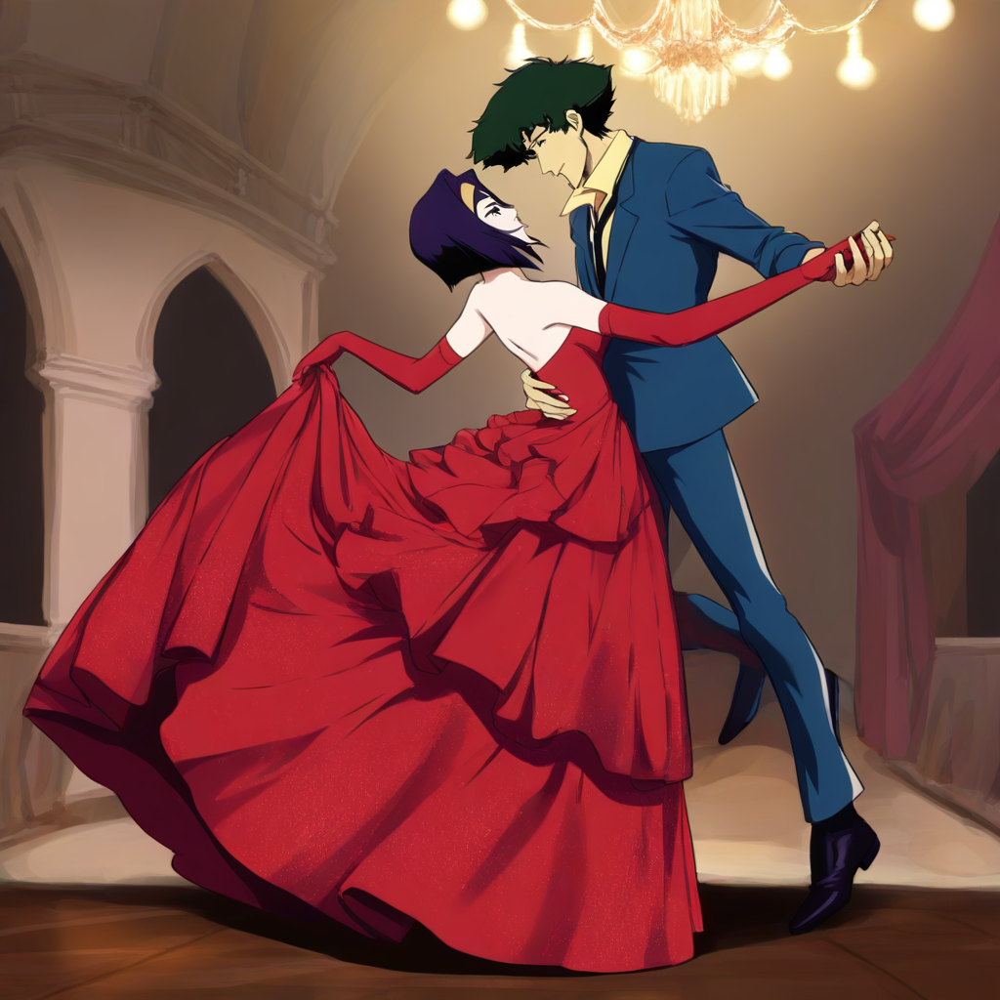
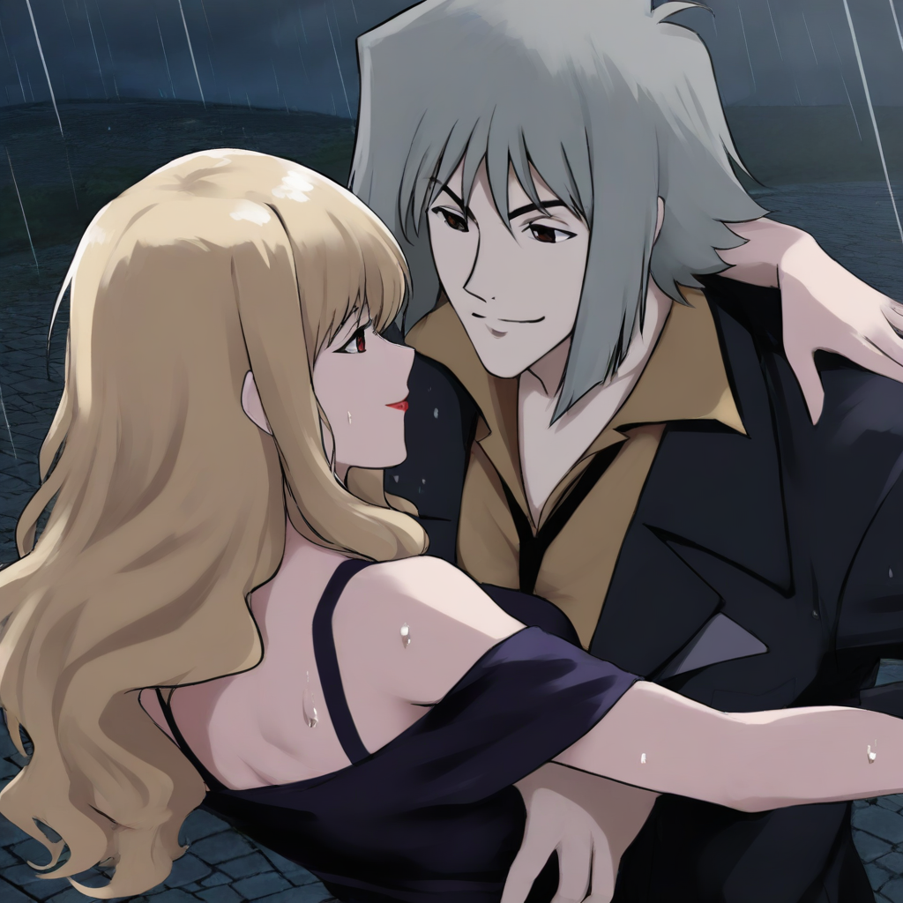
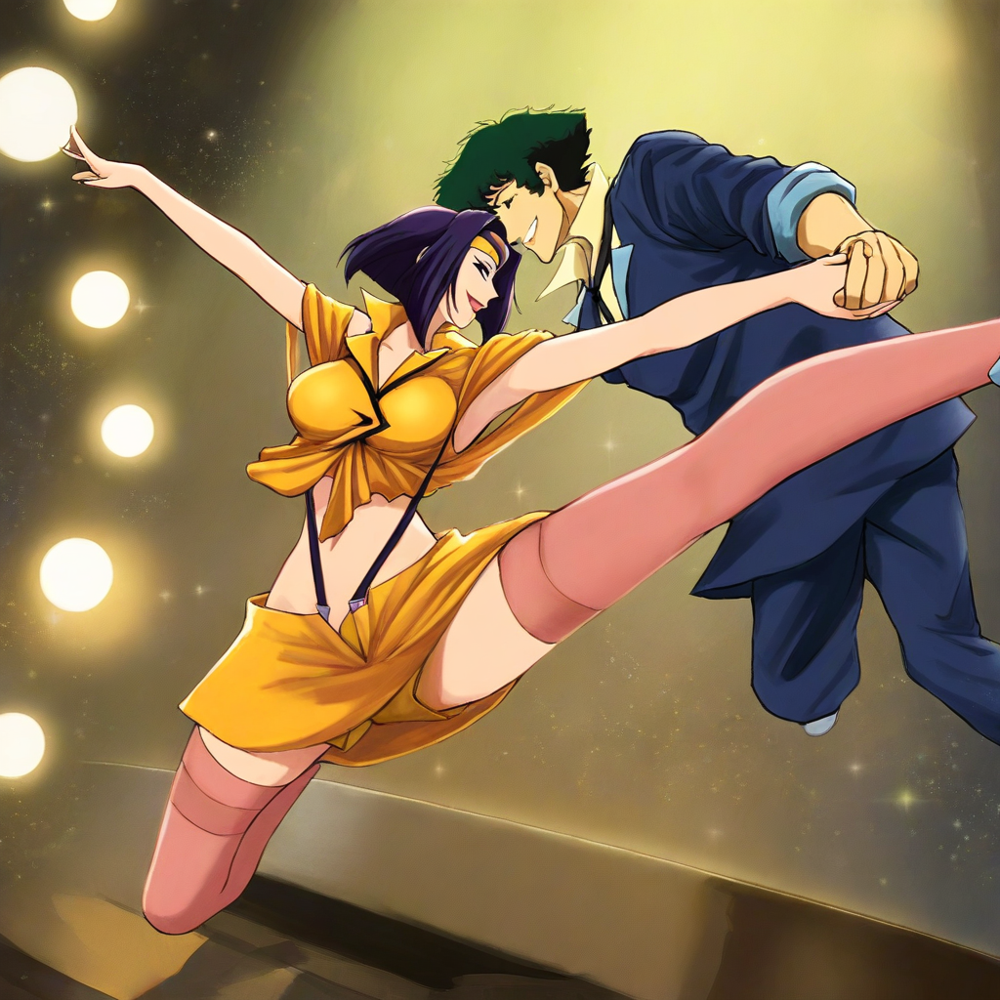
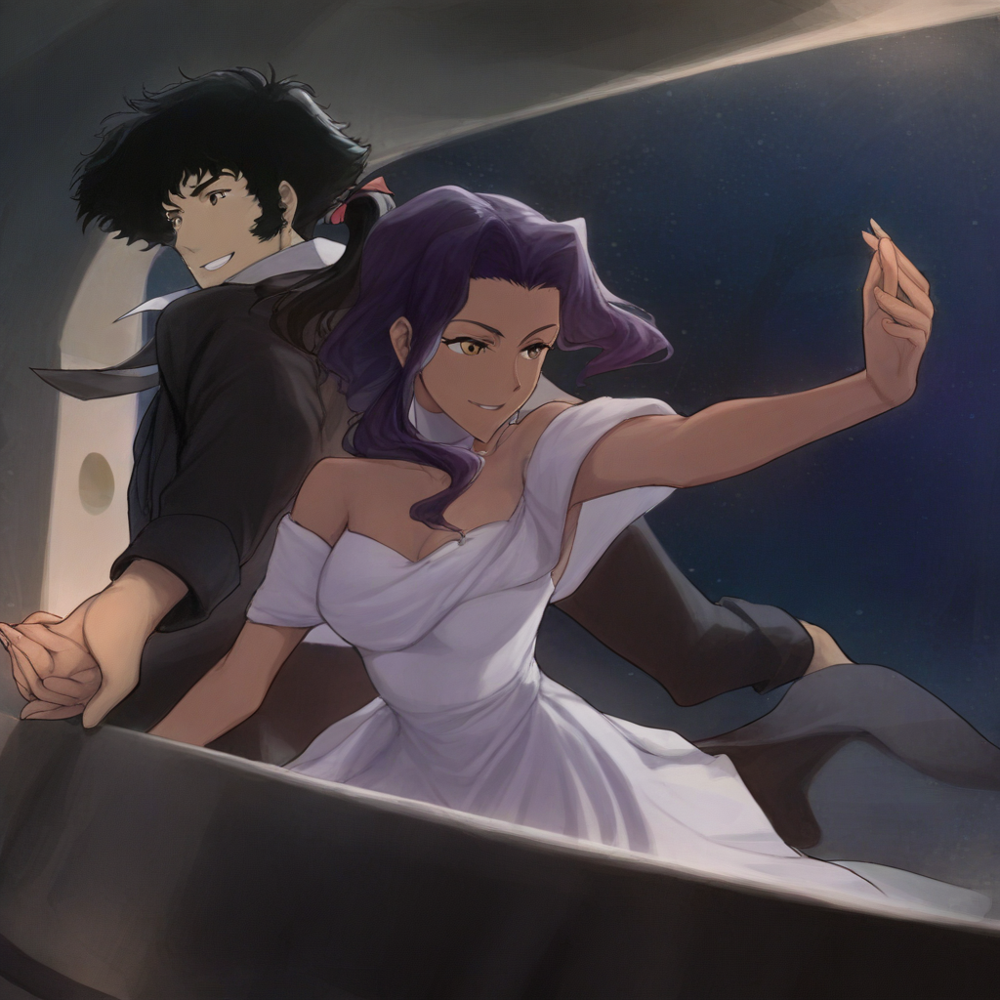

Illustrious XL 2.0 로컬 생성 · 「천국의 문」 등장인물(2026-10-02 심야 채택)
왼쪽이 지금 보드에 올라간 세트, 오른쪽이 새로 뽑은 세트. 아래 4장 묶음은 회원 앱 M4·M6 의 2×2 격자처럼 본 것.
현재 세트
후보 세트(후보가 없는 장르는 현재 카드)




현재(옛 유화 보관본) · 후보: 스파이크 + 페이, 빨간 장갑·샹들리에 볼룸
현재(옛 유화 보관본) · 후보: 비셔스 + 줄리아, 비 오는 밤거리
현재(옛 유화 보관본) · 후보: 스파이크 + 페이, 공중 킥
현재(옛 유화 보관본) · 후보: 빈센트 + 일렉트라, 해변·콩가